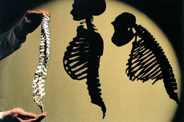
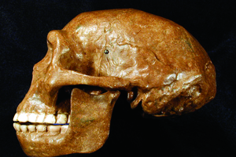
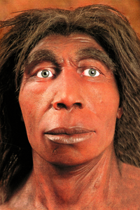

Lezione 1  La preistoria
La preistoria

-
290
540
-
305
718
-
155
465
-
170
440
-

ETIOPIA
In questa zona sono avvenuti i maggiori ritrovamenti di Australopiteco e Homo habilis. A lungo considerato l’ “anello mancante” tra le scimmie e l’uomo, l’Australopiteco aveva, come il più tardo genere Homo, un’andatura bipede e una dieta onnivora; secondo recenti ritrovamenti era anche in grado di fabbricare e utilizzare oggetti rudimentali. Nell’immagine vediamo a confronto, da sinistra, la ricostruzione della spina dorsale di un Australopithecus afarensis, di un essere umano e, a destra, di uno scimpanzé, nettamente più curva e funzionale a un’andatura quadrumane.

GIAVA
L’Homo erectus o Pitecanthropus erectus aveva una capacità cranica notevolmente più sviluppata rispetto ai suoi predecessori ed era in grado di fabbricare e utilizzare strumenti più raffinati: fu la prima specie a varcare i confini del continente africano, spingendosi fino all’Asia e all’Europa. I primi e più importanti ritrovamenti provengono dall’isola di Giava.
NEANDERTHAL
I resti di una particolare specie di Homo sapiens sono stati ritrovati verso la metà dell'Ottocento nella valle di Neander, in Germania. L’uomo di Neanderthal, è evolutivamente molto avanzato. Possiede ormai un alto grado di socialità: è in grado di usare utensili elaborati per la caccia e la sopravvivenza, indossa abiti fatti di pellicce di animali e pratica riti di sepoltura dei defunti.CRO-MAGNON
Qui sono stati ritrovati per la prima volta i resti dell'Homo sapiens sapiens nel 1868. Originario dell'Africa orientale, l'Homo sapiens sapiens ha popolato presto gran parte del mondo.